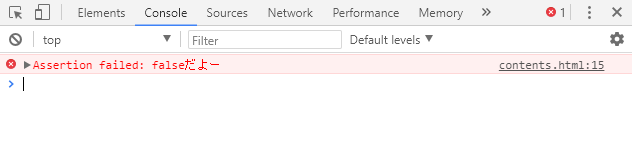
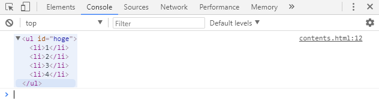
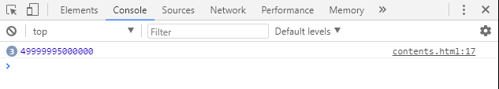

こんにちは。
寺崎です。
今回は、
consoleオブジェクトについて説明をしていきたいと思います。
さて、皆さんはconsoleと言われて何を思い浮かべるでしょうか？
それはもちろん授業でたくさんやってきた、console. logですよね？
Javascriptのコードをデバッグする際に、このconsole.logを使ってメッセージやオブジェクトの内容をログに表示することがあるかと思いますが、
この「console」オブジェクト、実はlogメソッド以外にも、
な、
な、
なんと
１８個ものメソッドがあります。
以下はその１８個のメソッドの一覧です。
こんな感じで多スギィるほどあるので、今回は、あえて、みんなが紹介しなさそうなマイナーなところを
３つほどにしぼって説明したいと思います。
まず１つ目に紹介していくメソッドが
assertメソッドです。
このメソッドは、第一引数(expression)がfalseの場合にのみ、 第二引数(message-object)の内容を表示します。
例えば以下のような使い方をします。
↓ ↓ ↓ ↓
上記の例では、hoge関数に0以下の数を渡しているため、結果としてfalseが返ってきています。
そのため、assertメソッドの第二引数で渡したメッセージが表示されています。 メソッドのテストをするとき等に便利なメソッドですね。
このメソッドは引数で渡されたDOMオブジェクト(HTML, XML)の内容をツリー形式で出力するメソッドです。
以下が使い方となります。
↓ ↓ ↓ ↓
DOMのプロパティを表示したいときはdirメソッド、
ツリーを表示したいときはdirxmlメソッドというふうに使い分けをするといいかもしれません。
このtimeStampメソッドは、メソッド実行時の時間をlogに出力するメソッドです。
以下、使用例でございます。
↓ ↓ ↓ ↓
正直これに関してはあまり使いどころがわかりませんが、
常にスクリプトの最初に実行しておくようにすれば、logを見て、
「いやん。もうこんな時間。」という感じで時間管理に便利かもしれません( ´∀｀ )
と、consoleメソッドについての紹介はこんなかんじですかね。